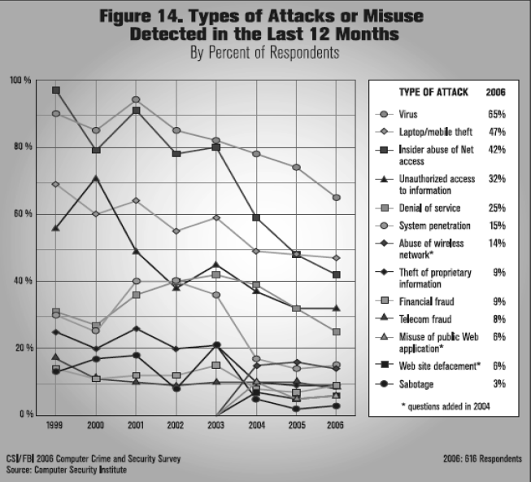

Ataques Informaticos
Según una encuesta de Seguridad del FBI, los virus siguen siendo la principal fuente de pérdida financiera en las organizaciones, Estas causas generan más del 74% del total de las pérdidas financieras. Las inversiones para protección en seguridad informática van en aumento para combatir todo esto del robo de los datos personales, en la siguiente gráfica; las situaciones de inseguridad o de la información no se dan solo por personas que divulgan información confidencial, se dan en grandes empresas, que cuentan con departamentos de tecnología y recursos suficientes para invertir en protección. Entonces, ¿cuál es la falla?.
Según un estudio por AvanteGarde2, que realizó una prueba en dejar unos sistemas conectados a Internet con las protecciones básicas configuradas de fábrica, el promedio en el que un equipo resultó atacado fue de 4 minutos. La primera cosa que una persona hace con un computador nuevo es conectarlo a Internet, enviar correos, bajar archivos, navegar, jugar, “chatear”, y otras cosa, nadie piensa en la seguridad, instalar parches y herramientas de protección.
La falla principal que permite que los usuarios sean atacados, está en que en muchos casos no se gestiona la tecnología dentro de un marco completo de protección de la información, y en la falta de concientización a las personas en los riesgos relacionados con el uso de tecnología, por lo que los esfuerzos se pierden. Las inversiones en tecnología de seguridad,como solución a los problemas de seguridad, deben ser realizadas con medidas de “Sistema de Gestión de Seguridad de la Información”.